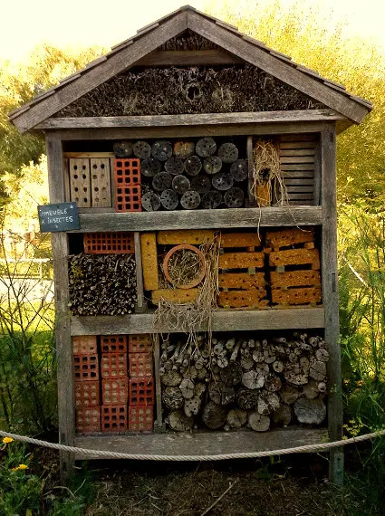

Hoteles de insectos
Pequeños refugios para grandes aliados
En las ciudades, muchos insectos encuentran cada vez menos lugares donde refugiarse, alimentarse o reproducirse. Los hoteles de insectos son estructuras que ofrecen pequeños espacios protegidos donde distintas especies pueden descansar, esconderse o construir sus nidos.
No todos los insectos necesitan el mismo tipo de refugio. Algunos buscan agujeros en madera, otros tallos huecos, cortezas, hojas secas o espacios oscuros y húmedos. Por eso, un buen hotel de insectos puede tener diferentes “habitaciones”.
Además de brindar refugio, estos hoteles nos ayudan a conocer mejor a los insectos que viven cerca de nosotros y a comprender por qué son importantes para la biodiversidad.

💡 Descubrí más sobre los hoteles de insectos:
¿Por qué son importantes los insectos?
Aunque son pequeños, realizan trabajos gigantescos para el equilibrio de nuestro planeta.
1. Polinizadores
Muchos insectos ayudan a transportar el polen de una flor a otra. Gracias a ese trabajo, muchas plantas pueden reproducirse y formar frutos y semillas.
🐝 Ejemplos: las abejas, los mangangás, las mariposas y otros insectos participan en la polinización.
2. Degradadores de materia orgánica
Algunos insectos ayudan a descomponer restos de plantas, animales y otros materiales orgánicos. De esa manera, los nutrientes vuelven al suelo y pueden ser utilizados nuevamente por las plantas.
🪲 Ejemplos: escarabajos, tijeretas y larvas ayudan a limpiar la tierra.
3. Controladores biológicos
Algunos insectos se alimentan de otros organismos que pueden dañar las plantas. Por ejemplo, las mariquitas y las larvas de crisopa comen pulgones.
🌱 Esto ayuda a mantener el equilibrio del ambiente y puede reducir la cantidad de algunas plagas.
4. Parte de la cadena alimentaria
Los insectos también son alimento para muchos otros animales. Aves, reptiles, anfibios, arañas y otros animales dependen de ellos para alimentarse.
🐦 Por eso, los insectos ocupan un lugar muy importante dentro de las cadenas alimentarias.
🌿 Plantas e insectos: una relación muy importante
Alimento y refugio
Las plantas ofrecen comida y hogar a muchos insectos.
Polinización
Los insectos ayudan a las plantas a formar flores y frutos.
Protección natural
Algunas especies cuidan a las plantas comiéndose las plagas.
Variedad y vida
Tener muchas flores favorece la presencia de más insectos.
🌐 Todo está conectado
Los insectos no viven aislados. Se relacionan con las plantas, el suelo y otros animales. Por eso, cuidar a los insectos también ayuda a cuidar los ecosistemas.
🐞 Algunos insectos que podemos encontrar cerca de un hotel
No todos estos insectos utilizan el hotel de la misma forma. Algunos pueden usar sus cavidades como refugio o lugar de nidificación y otros pueden acercarse porque encuentran alimento, flores o vegetación alrededor.
Elegí una pregunta para abrir la información: